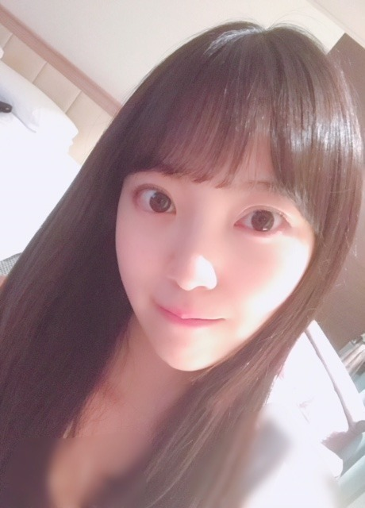

2018/0724Tueポニーテール♪
ついに今年も
真夏の全国ツアーが始まりました！！
夏〜
今回は初めてのドームツアーです！
福岡の初日を終えましたが
今回のライブでね、
「ジコチュープロデュースコーナー」
があって、自分の好きなように1曲丸々
プロデュースできちゃうのですが
私は福岡でシークレットグラフィティを
披露させていただきました♡
歌詞もMVもダンスも
世界観がすっごく好きだったので
披露できて幸せでした。
コメディミュージカル風で
みんなが男装をしたお客さん役をしてくれて
本当にかっこよくて。笑
2期と3期でやらせていただいたのですが
リハからわいわい笑って、楽しかったです。
歌詞中に「ポニーテールが目印〜」
って出てくるのですがあいにくわたしは今
ショートボブなのでこのシーグラの為に
急遽エクステをつけて出たの！
びっくりしたかな？
もう外しちゃうけど福岡限定だったので
楽しんでいただけたら
良かったです。
2日目は絢音とお揃いでツインにした〜


リハ着も髪型も似てた。

耳横で結んで
たてに巻いて、前髪はぱっつん！
いくちゃんとれんかに
ツイン似合うっていう
お褒めの言葉いただいたから
この日はルンルンルンだったの♪笑

久しぶりのロング
楽しめました〜。
しかし、
暑いね、、、溶けそう、、
熱中症にはお気をつけください！

名古屋
大阪
仙台の皆さん、待っとってねo(･x･)/
じゃね。
2018/07/24 11:48


コメント(570)
福岡公演行ったよ〜めっちゃ楽しかった！
急遽エクステつけてってことだったからめっちゃテンションあがった！
シーグラの衣装もめっちゃ似合ってたよ！
そしてやっぱツインテは最高だな！
美味しいものとかは食べられたりしたかな？
来月からのライブも頑張ってね！
ひろっぴー
そしてライブ2日間もお疲れ様ございました
エクステっていつ見ても分からないものですね‼︎
ツインテール可愛いです
リハーサルで熱中症にならないようにお気をつけ下さい
福岡ではおいしいご飯食べれましたか？
ケイタリングもやっぱり美味しいもの尽くしかな？
素敵な姉妹みたいなお二人
どれも素敵な写真^ ^
笑顔が癒されます
明日はレコメンですね
夜遅くまでのお仕事だからゆっくり休んで下さい
ブログ更新ありがと。
おぉー！始まったねー！
大好きな夏だね。笑
ドームツアーやるとかさすがです。乃木坂さん♪
未央奈のシーグラ！！
くぅ〜観たかった！！！
でもツイッターで画像だけでも見れて良かった！すっごく楽しそう。
よかったね。☺︎
お、２期と３期で組んだんだね！
にぎやかそう。笑
1曲にかける"想い"さすがです♪
リンダ！！
どんなポーズよ。笑った。
ほんと。仲良し。
(あやねちんの手になんか書いてある。
お、あご乗せですか！
(見てるところ違う。
うん。ツインテールかわいっ。
ルンルンルン。笑
プク顔ぉーーー！！！
かわいーー！！
何回も保存しよっと。笑
ほんとだね。アツアツ。
でも溶けないでね。笑
ありがとう。(^-^)
未央奈もリハとかで気をつけて〜
わぁー！！
急に近いーー。そしてかわいい！！
好き。
次は大阪のヤンマーで会いましょう！✨
しぃーゆーあげいん。o(･x･)/
って、タイトルなのにポニーテールの写真ないやないかーい！！笑う。
よし。じゃね。
のりさん風に言えば、ポニ未央奈ですかね⁉︎
ロングもショートもどっちも大好きです！！
ただ、宮城行く予定だったので堀ちゃんのジコチュー企画みれないのは残念です…
最近暑いですね！
熱中症には気をつけて頑張ってください！
ツイン超絶良いですね(*´ω`*)
いってボブもめちゃ好きです(*´Д｀*)
体調に気を付けて全国ツアー頑張って下さい！
大阪、宮城楽しみにしています！
その分、絢音ちゃんとお揃いツインの堀ちゃん見て癒され中(*´-`)
日に日に大人っぽさ増してる上に、堀ちゃんは可愛さもまだまだUP中だねぇ(*´∀｀)
暑いけど体調崩さないで、頑張ってね(*ﾟ▽ﾟ)ﾉ
全然ブログのコメントしてなくてごめんなさい!!!!!!!!!!
これから毎回のブログにコメントしていきます。
未央奈が大好きなことが伝わりますよーに！
未央奈のボブも可愛いけどツインテールとかポニーテールも似合う！今日も可愛いです♡
最低、めっちゃ暑いね。溶けちゃいそう…
熱中症には本当に気をつけてね！
これからも頑張って下さい！応援してます♡
大好き。
公演のたのしそうな様子が伝わってきます。
ブログ更新、ありがとう。
福岡初日で、未央奈さんプロデュースの「シークレットグラフィティ」披露ですか。
2期生、３期生合わせて結構な人数になるでしょうね。
かっこいい男装をしたメンバーに取り巻かれた未央奈さんの姿を観たかったです。
２日目。
髪型、リハ着と、絢音さんとシンクロしているのは、未央奈さんと絢音さん、さすがの仲の良さですね。
で、未央奈さんのツインテールですよ。４枚目の写真のように、赤い衣装を着てプク顔をされたら、２０歳過ぎた女性とは思えないかわいらしさを感じてしまいます。
ひとつ上の、赤い衣装を着て、ポニーテールで一人しゃがんでいる写真を見ても思うけど、あどけなくて、かわいらしくて、こういう女の子には、ただ、ただ、幸福になってほしい気持ちが湧いてきます。まさに、アイドルの鑑ですね。
福岡公演がたのしいのだから、他の公演もたのしくなるでしょうね。
熱中症、ファンのことを気遣ってくれて、ありがとう。
今年の夏は尋常ではない暑さだから、それに、ゲリラ豪雨とか竜巻とか、これからは台風もあるのかな、お互いに気をつけましょうね。
それでは。
未央奈さんにとって、乃木坂４６にとって、いい夏でありますように。
ブログ更新ありがとう
全国ツアー頑張ってね
体調管理気を付けて
水分こまめに(笑)
未央奈は、髪が長くても短くてもどっちでも似合ってますね！！
流石です！
最近は、暑いので気を付けて下さいね！
それでは失礼します！！
未央奈のポニーテール久しぶりに見たかったな( ＾∀＾)
ツインテール可愛い( ＾∀＾)
やっぱり未央奈は長い方が似合うと思うな( ＾∀＾)
(絢音ちゃんとツーショットの画像くらいの長さ)
全国ツアー第２弾・福岡公演、おつかれさまでした。
エクステ、「あれっ」て思いますよね。でも、何をやってもかわいい未央奈、絢音ちゃんとのツーショットも最高ですね。
次は大阪、野外になります。「猛暑」が続いているだけに、体調管理には気をつけてくださいよ。
私は、ナゴヤドーム２日目、先行でゲットできました。ミニライブはたくさん行ったことがありますが、大きなライブは、今回が初参戦となります。今から楽しみでなりません。その時はどんな髪型なのかな？
さて、「EX大衆」「アップトゥボーイ」「anan」特別号、楽しませていただいています。
「アップトゥボーイ」はとても上品な感じの写真でしたが、いつ撮ったんですか？ 不思議な感じがしています。
写真を見たら、未央奈の髪がロングになってたから、
髪の毛伸びるのはやい！って一瞬びっくりしたよー笑
ショートボブとロングの両方の可愛い未央奈を
同じ時間の中で見られるなんて
これはもう、めちゃくちゃ嬉しすぎるよ～！
毎日本当に暑い日が続いてるけど、
体調には気を付けて、この後のツアーも楽しんでね！
全ツ福岡公演お疲れ様❕
ジコチュー企画いいね
みおなのシーグラ見たかったなぁ
liveに備えてロングにしてくるあたり流石だなぁー。みおなのそういうとこ凄く好きだよ:heart01.gif
残りの公演も熱中症に気を付けて頑張って！
リハ着の透明感と衣装の完璧な可愛さが見事です。ツインもお似合いですけど、ポニー姿の上にシークレットグラフィティだなんて、見れた人は幸せ者ですね。
堀さんが挙げてた映画見ました。
勝手にふるえてろ超良いですね。名前で呼んでって言える人だから二を選べたのかなって思いました。それと夜明けにイチが置いた水がヨシカのじゃなかった事に愕然としました。僕は女心が分からないはずなので理解できてないところも有ると思いますけど、可愛いし痛いし笑えるしで好きな作品です。
あと50回目のファーストキスも良かったです。あんなに誘い笑いしてくる映画は珍しいです。原作の映画との違い見るのも楽しくて、最初の出会いにかけて天文学者とはなるほどって思いました。リメイク版にあったか忘れましたけど原作の「仔牛はどうなったの？」「毎日自分が牛だって忘れてる」ってジョークが、優しさもガサツさもユーモアも入ってて好きです。
ちなみに僕のお勧めの、劇場で公開してる映画は「カメラを止めるな！」です。邦画でゾンビものぐらいの事前情報で見たらとっても満足感の高い映画でした。多分これから各所で何度も勧められると思うので、期待度が上がりすぎる前に見る事をお勧めします。
そういえば前に映画見てる時に堀さんは顔が怖いみたいなこと言ってましたよね。なんか「幕が上がる、その前に。彼女たちのひと夏の挑戦」の中で平田オリザさんが百田夏菜子さんに演出家の振る舞いを教えてたのを思い出しました。
暑さもあって大変ですけど体調管理頑張って下さいね。いつも応援してます。
今日も1日お疲れ様でしたー
最後の写真今の未央奈ですか？
初期の未央奈かと思った！
ツインの写真もだけど、幼いよね
あ、これ褒めてるんよ
いつまでもそのままでいてほしいな(o^^o)
ショートの方が好きやから早くエクステとってー笑
では、明日も1日楽しそうd(@^∇ﾟ)/ﾌｧｲﾄｯ♪
おやすみおな☪️
どんだけ～
名古屋のライブ楽しみにしてる～♪
私は行くことは出来なかったけど、乃木坂46公式Twitterでシークレットグラフィティの時の未央奈ちゃんの写真見ることができたんですけど、すーごい可愛かった♪
未央奈ちゃんの表現するシークレットグラフィティ見たかったなぁ(涙)
猛烈に暑い日が続いてるので、体調には気をつけてねん！
明日も頑張ろね♪
おやすみい。
またいつか、ロングにしてね。
でも、ボブも可愛すぎる…
ライブやら、
色々忙しいだろうけど、
身体に気をつけて頑張ってね。
始まりました真夏の全国ツアー地方公演。開幕戦を飾るのは九州福岡ヤクオフドーム。西武、東京に続くドームスタジアムでのライブはいかがでしたか。続くツアーもがんばってください。
一人一曲を選んでプロデュースする「ジコチュープロデュース」お疲れさまでした。歌詞に合わせてエクステつけるとは芸が細かい（笑）。ポニーにツインと、長い髪も楽しめたようで何より。続く公演でのプロデュースも楽しみ。
ではまたコメントします。毎日暑いので体調に気をつけてください。
さらばだ、また会おう！（気球に乗って去りぬ〜）
題名に釣られて読みました。
嘘です。笑
いつも拝見させてもらってます。
シークレットグラフィティ見たかった。
褒められてルンルンルン良いですね！
ほんま暑いね。
堀ちゃんも熱中症気をつけて！
待っとくねo(･x･)/
待ってますね笑
ほーりーはツインテールも似合うんですね笑 やっぱりロングも捨てがたい、、、笑
まだまだ猛暑が続くようなので体調気をつけてください！応援してます！
可愛い
今日FNSうたの夏まつり見るね
レコメンも聴くね
斉藤貴巳
おはようございます
福岡公演お疲れ様でした
シークレットグラフィティのエクステの堀ちゃん見たかったです
日程が合わないので行けませんが残りの公演も頑張って下さい
もう一度言いますが、東京公演の時は本当に楽しかったのでありがとうございました！
今日も暑くなるそうなので熱中症に気をつけて下さい（岐阜は特に暑いようです）
今日もレコメン聴きます
サマーの君は女神サマー（だっけ？）
仕事行きます
ありがとうございました
楽しみにしてます。
福岡公演お疲れ様。
ジコチュー企画気になる！見たかったなー(>_<)
ポニテもツインも似合うから見れた人が羨ましい！
暑い日が続いてるから熱中症には気をつけてね。
ツアー引き続き応援してるよー！
今年も素敵な夏にしよーね！！
ブログ更新ありがとう。
改めて、福岡ドームでのライブが好評で良かったね。次は長居、野外だから雨が心配だけど、頑張ってくださいね。
私は名古屋ドームの二日目に参加しますので、最高のパフォーマンスを期待しています。ツインテールもカワイイけれど、ショートの未央奈ちゃんに会いたいんです。よろしくお願いします。
今日はうたの夏祭りからのレコメンですね、長丁場みたいだから、上手く休憩を取って過ごしてくださいね。
乃木坂46と頑張ってるcuteでsmartな未央奈ちゃんを応援しています。
ところで、最近見た映画で「ブリグズビー・ベア」がおすすめです。ものすごく異常な状況なのに登場人物がみんなまっすぐで愛にあふれていて、「物語の力」というものを感じさせる内容です。
大阪も行くから待っててね！
ツインテールが似合いすぎて…!!
福岡は遠いので行けなかったけど、知り合いが福岡に住んでいるので生写真はゲットしました
未央奈も出ましたー(*^^*)うふふ
これからのツアーも頑張ってください
大好きです(*´･ω･｀)b
安定の可愛さ！！
未央奈プロデュース見たかったな(>_<)
ポニテのためにエクステ付けるだなんてすごい(๑˃̵ᴗ˂̵)
福岡でのライブお疲れさまでした。
未央奈のジコチュープロデュース。
見たかった…。見に行けずすみませんm(_ _)m
シークレットグラフィティーを披露したということで、未央奈の取り合いが起こったって感じですかね笑
僕はシークレットグラフィティーの、MVのあのわちゃわちゃ感が好きです。というか山岸監督のMVが好きなんだと思います。
男装ってあまりしないですよね。メンバーの姿が新鮮というか、本当にやりたいことだけやった感ありますね笑 でも、めっちゃ見たかった…。
このあとも、大阪、名古屋、宮城の3会場でライブがありますね。ライブ全体を通してパフォーマンスをすることはもちろん、未央奈が「プロデュースをする側」から、今度は『される側』で何かパフォーマンスしてくれることを期待してますm(_ _)m
ライブ期間って、めちゃくちゃ忙しいし体調管理も気をつけなきゃいけないけど、ほぼ全員のメンバーと集まって一緒に行動ができるという、貴重な時間なのかもしれませんね。この時間を大切に…ですね。。。
そういえば最近、僕も映画を観ました。
「青空エール」と「世界から猫が消えたなら」です。青空エールは、今の時期にはピッタリの作品だったのでとても観やすいし、セカネコはSFチックだけど、その世界観は独特で最後まで楽しめる作品。
どちらも良い作品なので、未央奈にもぜひ観てもらいたいですm(_ _)m
未央奈と映画の話したくさんしたいなーって思うんだけど、なかなか長く話せる時間がないから困ってて。。時間作れるように頑張りますね。そしてその時はいっぱい映画の話ししましょ。
じゃあ、最後に。
体調管理には気をつけて。未央奈も熱中症には気をつけてね。
ではでは、ねこでした。
未央奈さん、おはようございます
ブログ更新お疲れ様です
「ジコチュープロデュースコーナー」
これはもう他会場で未央奈さんのコーナーは
観られないのだろうか気がかりだよ
公式Twitterのその時の写真を見たけどまさに
ジコチュウ(ヒロイン)って感じだった。笑
あーどんなだったか観たいなぁ、、
そしてポニテにツインテールとロングヘアー祭り
全てのバリエーションを見たいけどナゴヤドーム
ではショートボブを堪能したいと思います
あと一ヶ月…長いようで短いんだろうな
755の映画の話
これまで感動して泣いたり鳥肌が立つ事もあった
けど人生を変えるまでに影響を受けるような作品
には巡り合ってない
未央奈さんはもう見つけましたか？今観てる映画
がそうだったりして。。
未央奈のシーグラ、しんけん可愛かった！！アイドル全開、キラキラしてた！大好き！これからまた暑くなるけど頑張ってね！応援してます！またライブで会えるのを楽しみに仕事がんばる！
未央奈＊
おはよう〜(^o^)/
ユウTAM(タム)です（´-`）
お母さんと仲良しいいね♪♪
ボクもたまには電話してみようかな(*´-`)
----------------キリトリ----------------
ではでは、
今日のおススメの一曲♪♪
世界はあなたに笑いかけている
/ Little Glee Monster
おし( ^ω^ )まい
コメントする